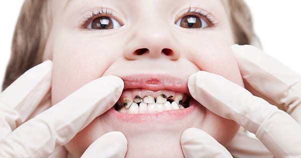

Tooth decay happens when foods high in carbohydrates like fruits, bread, candy or milk, adhere to the outer layer of your teeth. Bacteria in your mouth will then digest these pieces of food and turn them into acid, bringing about the build-up of plaque on your teeth.
Since plaque is acidic, it can dissolve the enamel that coats your teeth and make holes in them known as cavities.
Demineralization is the point at which the minerals in the tooth enamel, basically calcium tends to decline. This happens when acids produced by bacteria eat at the minerals in the outer layer of the tooth.
Demineralization might make white spots show up on the teeth. You might have the option to reverse demineralization at home by brushing with fluoride toothpaste and flossing. Visit Dental hospital in Narasaraopet for more information regarding dental health.
While demineralisation and remineralisation stops, enamel decay happens. This develops a hole or sticky spot in the tooth.
While this takes place, the white spots darken to a brown or yellow color, sensitivity increases and cavities frame. Cavities must be filled by the dentist in preventing further complications.
When tooth decay advances past enamel decay, it reaches the dentin, the tissue that lies under the enamel.
Dentin contains tubes that lead to the tooth's nerves, making it more delicate to acid damage. Since dentin is a lot gentler than enamel, decay progresses much speedier when it arrives at this stage. Get your Tooth decay treatment from Best dentist for tooth decay in Narasaraopet
At this stage in the decay process, bacteria reach the pulp, the tooth's deepest level. It contains nerves and blood vessels. At this stage, tooth rot can cause extreme tooth pain.
The bacterial infection, if untreated, may lead to the formation of the dental abscess.
When tooth decay advances into the pulp, bacteria invade and lead to infection. The infection causes irritation that makes an abscess or a pocket of pus at the lower part of the tooth.
An abscess needs immediate treatment in preventing the infection from spreading to the jaw, neck and head.
If the tooth turns out to be excessively compromised from decay and contamination, tooth extraction is the main choice to prevent further damage.
Make an appointment with Dr. Dodda Venkatesh Kumar, M.D.S at Dental cavities clinic in Narasaraopet